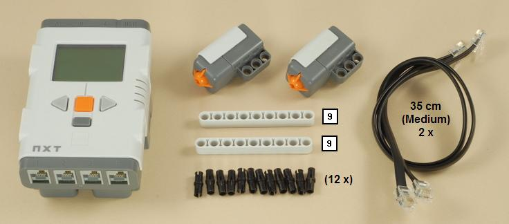
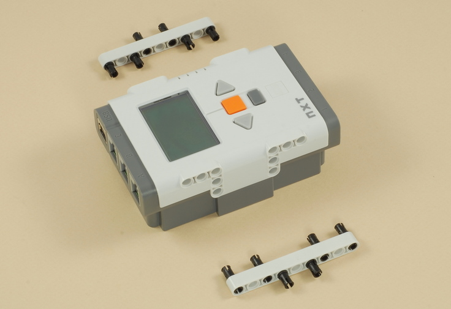
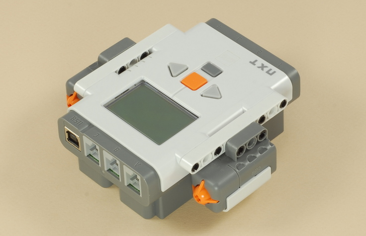
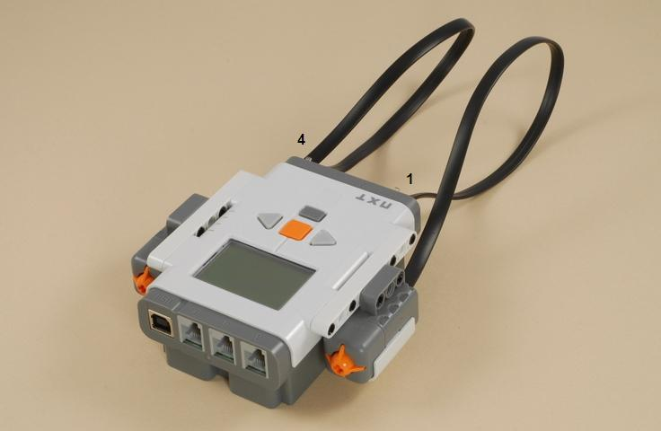

Fun Projects for your LEGO� MINDSTORMS� NXT!
|
|
Fun Projects for your LEGO� MINDSTORMS� NXT! |
| 5 Button Remote Control |
|

1

| (You can use the NXT with either AA batteries or the NXT Rechargeable Battery Pack.) |



| 5
Button
Remote Control Programming The 5ButtonRemote program for the remote control provides one general purpose way to send Bluetooth messages from the remote control to another NXT (other strategies are possible). A receiving program on the other NXT must be used to interpret the Bluetooth messages and take action. For example, see the 5ButtonSteer program from the Race Car project. Instructions to use the remote with the Race Car are below. The 5ButtonRemote program sends two different kinds of Bluetooth messages to two different mailboxes on the receiving NXT:
|
|
Using Bluetooth Wireless Remote Control with Two NXTs
|
||||
Challenges
|
|
Copyright
�
2007-2010 by Dave Parker. All rights reserved. |